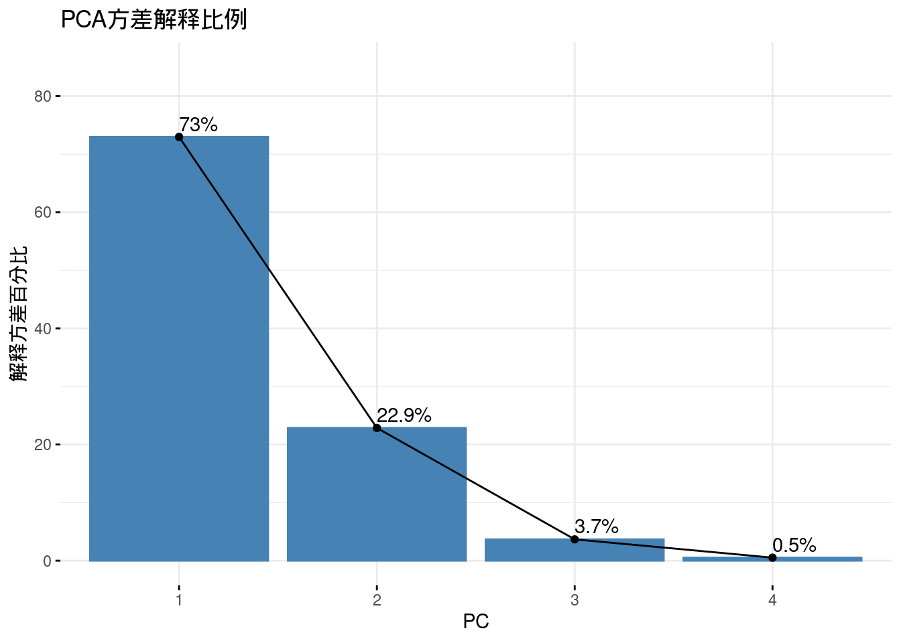
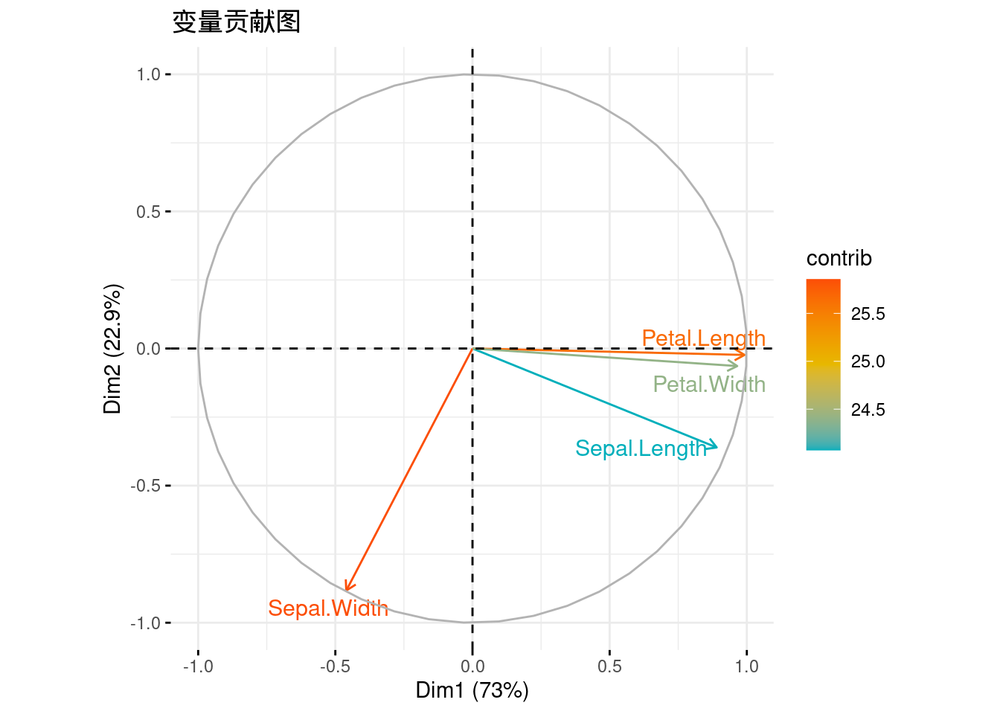
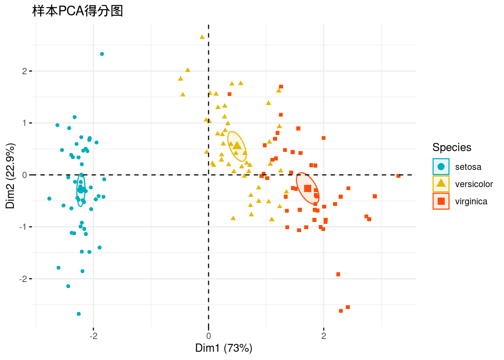
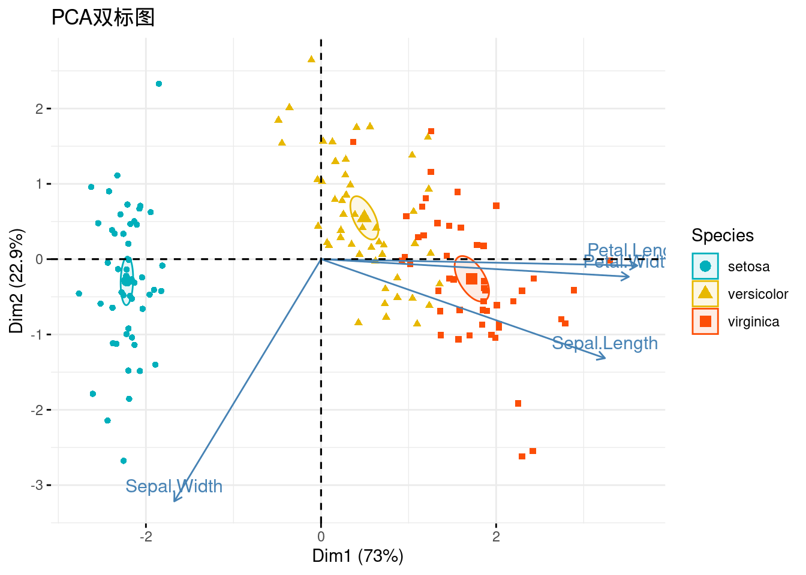
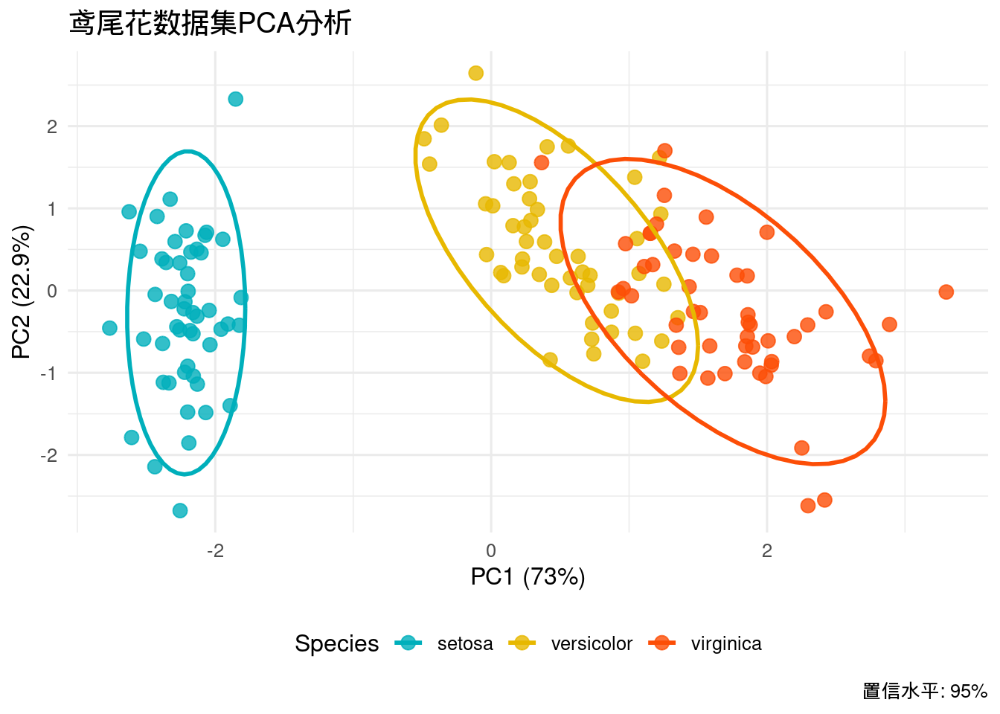
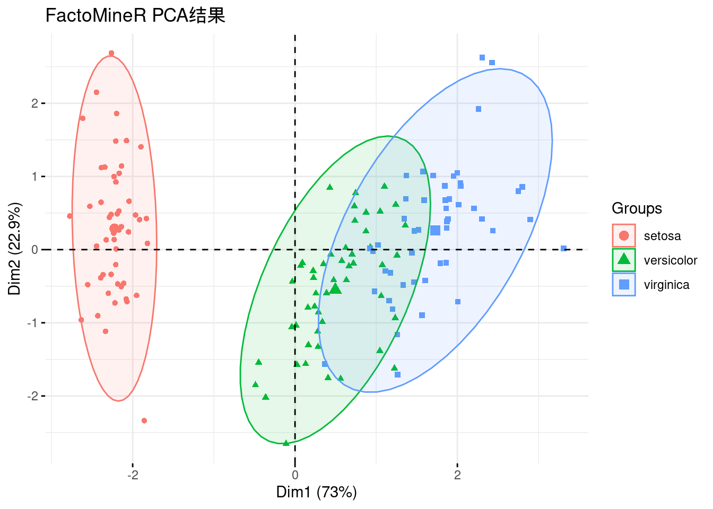

Code
library(ggplot2)
library(ggfortify)
library(FactoMineR)
library(factoextra)
library(dplyr)在高维数据的分析中，主成分分析(PCA)是一种常用的降维技术，其主要原理是通过找出方差最大的两个主成分方向来变换数据，通过线性变换将高维数据投影到低维空间，同时保留数据的主要特征。本文将展示如何在R中进行PCA分析，并使用鸢尾花数据集进行可视化。
系统：全平台（Linux/MacOS/Windows）
编程语言：R
基础依赖包：ggplot2, dplyr, ggfortify, FactoMineR, factoextra
library(ggplot2)
library(ggfortify)
library(FactoMineR)
library(factoextra)
library(dplyr)使用R自带数据集iris中的鸢尾花数据集进行演示
data("iris")
head(iris) Sepal.Length Sepal.Width Petal.Length Petal.Width Species
1 5.1 3.5 1.4 0.2 setosa
2 4.9 3.0 1.4 0.2 setosa
3 4.7 3.2 1.3 0.2 setosa
4 4.6 3.1 1.5 0.2 setosa
5 5.0 3.6 1.4 0.2 setosa
6 5.4 3.9 1.7 0.4 setosa我们首先对数据进行执行PCA分析。需要注意的是，数据需要在标准化后进行分析，函数prcomp()中的参数scale为我们提供了自动标准化的选项：
iris.pca <- prcomp(iris[, -5], scale = TRUE)
summary(iris.pca)Importance of components:
PC1 PC2 PC3 PC4
Standard deviation 1.7084 0.9560 0.38309 0.14393
Proportion of Variance 0.7296 0.2285 0.03669 0.00518
Cumulative Proportion 0.7296 0.9581 0.99482 1.00000在summary(iris.pca)中可以看到，我们已经从数据集中提取出了多个主成分PC从新的”视角”描述数据。我们可以使用fviz_eig()绘制下面的柱状图来显示每个主成分所解释的数据方差比例。同时fviz_pca_var()绘制的变量贡献图显示了原始变量（即花瓣长度、宽度等原始特征）与前两名的主成分的关系，箭头长度表示变量贡献度（参数指定col.var = "contrib"）：
fviz_eig(iris.pca,
addlabels = TRUE,
ylim = c(0, 85),
main = "PCA方差解释比例",
xlab = "PC",
ylab = "解释方差百分比")
fviz_pca_var(iris.pca,
col.var = "contrib",
gradient.cols = c("#00AFBB", "#E7B800", "#FC4E07"),
repel = TRUE,
title = "变量贡献图")
上面我们已经完成了对数据的变换，现在可以展示样本在这个新的主成分空间上的分布。如果主成分对方差的解释度高，那么我们将看到不同种类的鸢尾花在主成分空间上相互远离，而同种类的鸢尾花则相互靠近。fviz_pca_ind()可以绘制PC1和PC2方向上的数据散点图，按鸢尾花种类着色并添加置信椭圆。
参数说明：
col.ind: 输入数据的分类变量
geom.ind: 选择绘制的散点形状类型，默认为带有label的散点，这里输入"point"会让散点不显示label
palette: 应用于分类变量的颜色向量
addEllipses: 是否添加椭圆圈
ellipse.type: 椭圆圈的计算方式，允许值有"convex"、"confidence"、"t"、"norm"、"euclid"等
legend.title: 图例标题
repel: 是否使用延长线标记数据点
title: 图片标题
fviz_pca_ind(iris.pca,
col.ind = iris$Species,
geom.ind = "point",
palette = c("#00AFBB", "#E7B800", "#FC4E07"),
addEllipses = TRUE,
ellipse.type = "confidence",
legend.title = "Species",
# repel = TRUE,
title = "样本PCA得分图")
与fviz_pca_ind()类似，fviz_pca_biplot()可以在样本散点的基础上添加原始的变量信息。
fviz_pca_biplot(iris.pca,
col.ind = iris$Species,
palette = c("#00AFBB", "#E7B800", "#FC4E07"),
addEllipses = TRUE,
geom.ind = "point",
ellipse.type = "confidence",
legend.title = "Species",
# repel = TRUE,
title = "PCA双标图")
此外，我们还可以使用ggplot2自定义绘制PCA样本图：
pca_scores <- as.data.frame(iris.pca$x)
pca_scores$Species <- iris$Species
ggplot(pca_scores, aes(x = PC1, y = PC2, color = Species)) +
geom_point(size = 3, alpha = 0.8) +
stat_ellipse(level = 0.95, linewidth = 1) +
scale_color_manual(values = c("#00AFBB", "#E7B800", "#FC4E07")) +
labs(title = "鸢尾花数据集PCA分析",
x = paste0("PC1 (", round(summary(iris.pca)$importance[2,1]*100, 1), "%)"),
y = paste0("PC2 (", round(summary(iris.pca)$importance[2,2]*100, 1), "%)"),
caption = "置信水平: 95%") +
theme_minimal(base_size = 12) +
theme(legend.position = "bottom")
FactoMineR是一个专门为多维数据分析和探索设计的R包，其中也提供了便捷的PCA分析函数PCA()。下面简单演示其使用与可视化：
res.pca <- PCA(iris[, -5], scale.unit = TRUE, graph = FALSE)
fviz_pca_ind(res.pca,
label = "none",
habillage = iris$Species,
addEllipses = TRUE,
ellipse.level = 0.95,
title = "FactoMineR PCA结果")
https://www.geeksforgeeks.org/principal-component-analysis-pca/
https://github.com/kassambara/factoextra
https://github.com/husson/FactoMineR